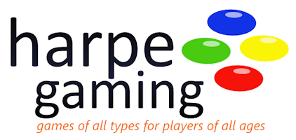

Welcome to Harpe Gaming. We have a simple philosophy. It has three main points:
And that's it. We believe that the best games are the ones that bring people together through shared experiences. With all due respect to our video gamer friends, you can't always get that from a computer screen. Sometimes you need the intimate approach of sitting face-to-face around a common table with the soda and chips at your elbow.
We are a local board and card game store located in the heart of Morgantown near the campus. We carry hundreds of games and puzzles, including educational games, family games, card games, historical simulations, role-playing games, and so much more. If you remember a great game from your youth, we probably have it in our antiques collection. If we don't, we know where we can get it.
We're more than just a place to buy games. We celebrate gaming and the company of good friends. Our game room is free for all to us. Sit down, pick out a game from our demo library and start playing. We sponsor tournaments, challenges, and special social events. You'll always find a game to play.
We're always on the lookout for the best new games. We publish periodic reviews of new titles. Just out our reviews of Towers and Temples and Alliance; both new this month at Harpe Gaming.
Questions?Contact us at:
or call us at: